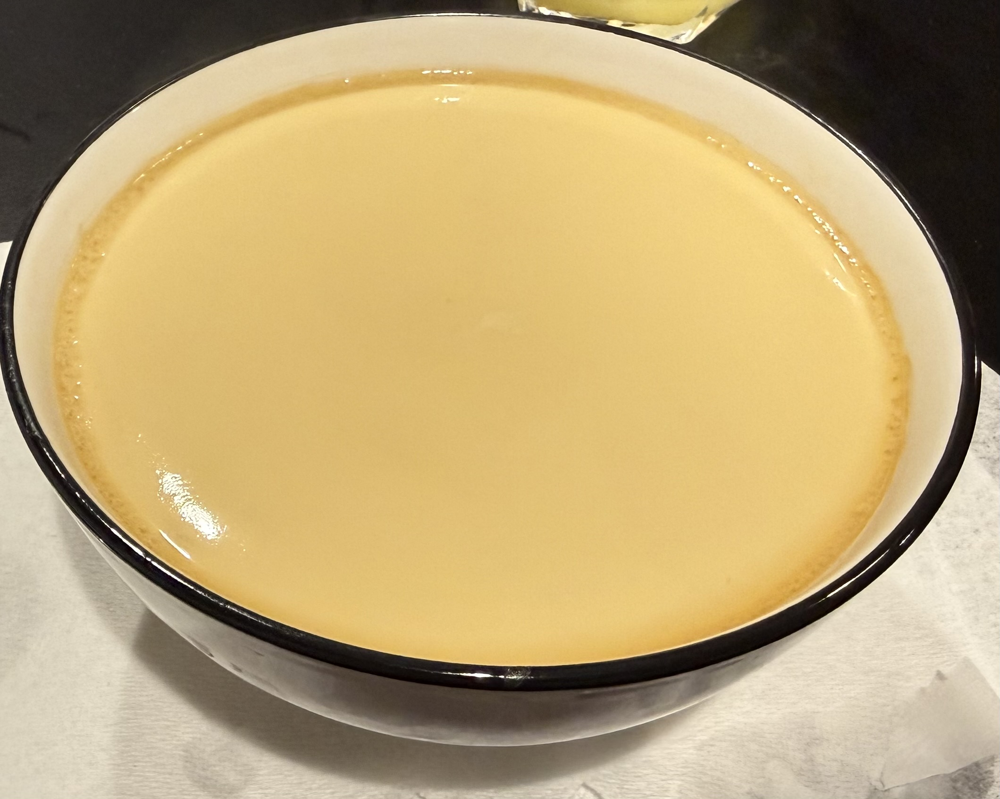

Steamed Eggs

Description
Steamed eggs are a classic dish enjoyed by generations. Simple to make,
easy on the stomach and throat, and quick to cook, this dish can be paired with
carbs or enjoyed alone. Many variations of this recipe are possible, but this recipe will go over the
basic version.
Ingredients
- 3 raw eggs
- Water
- Fish sauce
- Soy sauce
Steps
- Crack open the three eggs into a bowl, making sure to remove the thick albumen.
Note: the thick albumen can be left in, but it will not mix homogeneously
and will sink to the bottom in a thick white layer in the final product.
- Mix the egg yolk and egg white.
Measure out water roughly twice the volume of the mixture. Microwave it for 45-60 seconds
and add it to the mixture. Mix well.
- Add fish and soy sauce to taste.
- Prepare a pot and steamer rack. Add enough water to just cover the steamer rack.
- Add the bowl and cover it with plastic wrap, or an overturned plate. Cover everything with pot lid.
- Steam for 16-20 minutes on high until cooked, or until desired consistency.
- Serve